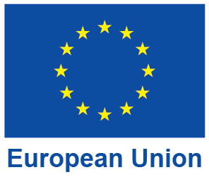

Enabling Sustainable Economic Growth through the Protect, Respect and Remedy Framework

Since 2016, UNDP has been working in close collaboration with other UN entities to promot the implementation in Asia of the UN Guiding Principles on Business and Human Rights in Asia, with support from the Government of Sweden, Japan and the European Union. This platform provides an overview of the EU-supported project, B+HR Asia: Enabling Sustainable Economic Development through the Protect, Respect and Remedy Framework.
Asia is emerging from the COVID-19 pandemic to a fragmented global economy, stricken by supply chain
bottlenecks, shortages in key commodities and steep inflationary pressures. In this context, the consensus
on the benefits and tradeoffs of global economic integration is being reconsidered in earnest.
Today, policy makers and business leaders speak more frequently of economic resiliency and self-reliance.
Complex value chains and just-in-time production seem increasingly risky, whereas just-in-case re-shoring
seems prudent and far-sighted.
Asia is emerging from the COVID-19 pandemic to a fragmented global economy, stricken by supply chain
bottlenecks, shortages in key commodities and steep inflationary pressures. In this context, the consensus
on the benefits and tradeoffs of global economic integration is being reconsidered in earnest.
Today, policy makers and business leaders speak more frequently of economic resiliency and self-reliance.
Complex value chains and just-in-time production seem increasingly risky, whereas just-in-case re-shoring
seems prudent and far-sighted.
Asia is emerging from the COVID-19 pandemic to a fragmented global economy, stricken by supply chain
bottlenecks, shortages in key commodities and steep inflationary pressures. In this context, the consensus
on the benefits and tradeoffs of global economic integration is being reconsidered in earnest.
Today, policy makers and business leaders speak more frequently of economic resiliency and self-reliance.
Complex value chains and just-in-time production seem increasingly risky, whereas just-in-case re-shoring
seems prudent and far-sighted.
The Project
Programming highlights
In Mongolia, B+HR Asia provides technical support to the government in developing a National Action Plan (NAP) on Business and Human Rights, supports civil society actors working with human rights defenders, and promotes women's equal participation and leadership in business. The country's NAP will be published in 2023.
Programming highlights
In Mongolia, B+HR Asia provides technical support to the government in developing a National Action Plan (NAP) on Business and Human Rights, supports civil society actors working with human rights defenders, and promotes women's equal participation and leadership in business. The country's NAP will be published in 2023.
Programming highlights
In Mongolia, B+HR Asia provides technical support to the government in developing a National Action Plan (NAP) on Business and Human Rights, supports civil society actors working with human rights defenders, and promotes women's equal participation and leadership in business. The country's NAP will be published in 2023.
B+HR Asia: Enabling Sustainable Economic Development through the Protect, Respect and Remedy
Framework supports the implementation of the UNGPs in close partnership with Asian governments, business,
and civil society, through dialogue, training, research, small grant provision and awareness raising
activities.
In so doing, the joint EU-UNDP action aims to strengthen human rights conditions in business operations
and supply chains, facilitating sustainable economic growth while promoting multilateralism.
The action is complemented by the Promoting Responsible Business Practices through Regional Partnerships
project funded by the Government of Sweden and the B+HR Global project funded by the Government of Japan.
The European Union finances the action under the Partnership Instrument with €6.5 million to promote
values shared by both the EU and UNDP. These values include greater levels of equality, respect for
human rights, democracy and the rule of law.
The European Union is committed to the business and human rights agenda to support responsible trade,
investment and business practices in Europe and around the world.
The European Union finances the action under the Partnership Instrument with €6.5 million to promote
values shared by both the EU and UNDP. These values include greater levels of equality, respect for
human rights, democracy and the rule of law.
The European Union is committed to the business and human rights agenda to support responsible trade,
investment and business practices in Europe and around the world.
B+HR Asia will reach its objectives through four component workstreams:
1
Awareness raising of the UNGPs and peer-to-peer exchange on
lessons learned among key stakeholders to build knowledge and political will in furtherance of policy
convergence.
2
Awareness raising of the UNGPs and peer-to-peer exchange on
lessons learned among key stakeholders to build knowledge and political will in furtherance of policy
convergence.
3
Awareness raising of the UNGPs and peer-to-peer exchange on
lessons learned among key stakeholders to build knowledge and political will in furtherance of policy
convergence.
4
Awareness raising of the UNGPs and peer-to-peer exchange on
lessons learned among key stakeholders to build knowledge and political will in furtherance of policy
convergence.
Our Goals
The project is being implemented over a period of 48 months, from January 2020 to December
2023, with programming focused in India, Indonesia, Malaysia, Mongolia, Myanmar, Sri Lanka,
and Thailand.
Full time specialists located in UNDP country offices work in partnership with local
stakeholders to drive impactful programming.
UNDP country offices implement activities based on annual workplans specific to each
country, prioritizing the most pressing concerns and responding in a balanced way to the needs of
all stakeholders.
Programming highlights
In Mongolia, B+HR Asia provides technical support to the government in developing a National Action Plan (NAP) on Business and Human Rights,
supports civil society actors working with human rights defenders, and promotes women's equal
participation and leadership in business. The country's NAP will be published in 2023.
In India, the project team is engaging the business sector on awareness raising and
human rights due diligence practice as well as collaborating with civil society through small
grants. The team is also supporting the Ministry of Corporate Affairs in the development of the
country’s NAP.
In Myanmar, the team is producing a series of videos, radio spots,
podcasts, and other materials to raise community awareness of the relationship between business
activity and land acquisition. Programming is on hold given current political circumstances in the
country.
In Thailand, the team is promoting
business and human rights through a series of consultations and awareness raising
activities. B+HR Asia is exploring approaches to limiting the use of Strategic Lawsuits Against
Public Participation (SLAPP) against human rights defenders.
In Malaysia, the team is supporting the government in developing a NAP on
Business and Human Rights through training, and stakeholder consultations. Support to a National Baseline Assessment and
research on a variety of BHR topics in Malaysia
is ongoing.
Asia is emerging from the COVID-19 pandemic to a fragmented global economy, stricken by supply chain
bottlenecks, shortages in key commodities and steep inflationary pressures. In this context, the consensus
on the benefits and tradeoffs of global economic integration is being reconsidered in earnest.
Today, policy makers and business leaders speak more frequently of economic resiliency and self-reliance.
Complex value chains and just-in-time production seem increasingly risky, whereas just-in-case re-shoring
seems prudent and far-sighted.